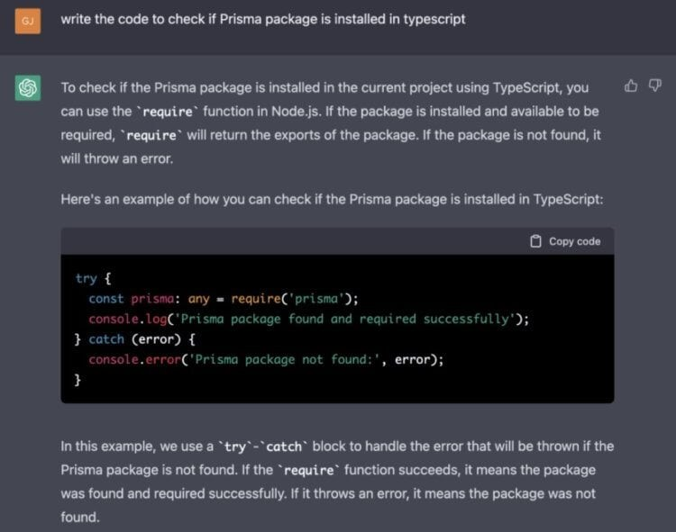

Нейросети превосходят людей
-
Нейросеть написала дипломную работу
В конце 2022 года компания OpenAI выпустила чат-бота ChatGPT, который умеет давать развернутый ответ практически на любой вопрос. Первое время большинство людей просто развлекалось: просили его ответить на обычные вопросы, генерировали анекдоты и так далее. Но потом нейросети начали находить практическое применение вроде написания программного кода и решение школьных заданий.
В России больше всего говорили о студенте РГГУ Александре Жадане, который решил воспользоваться нейросетью ChatGPT для написания исследования на тему «Анализ и совершенствование управления игровой компании». Сначала нейросеть написала план диплома, а потом студент вводил запросы на английском языке и переводил результат — после сложения ответов нейросети воедино, получился документ с уникальностью 82%. Руководитель и дипломная комиссия оценили его работу на «удовлетворительно». После того, как студент раскрыл правду, некоторые люди требовали лишить его диплома. Но в итоге аннулировать защиту дипломной работы никто не стал.